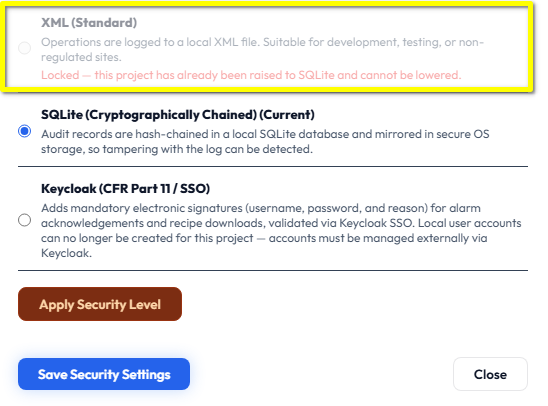
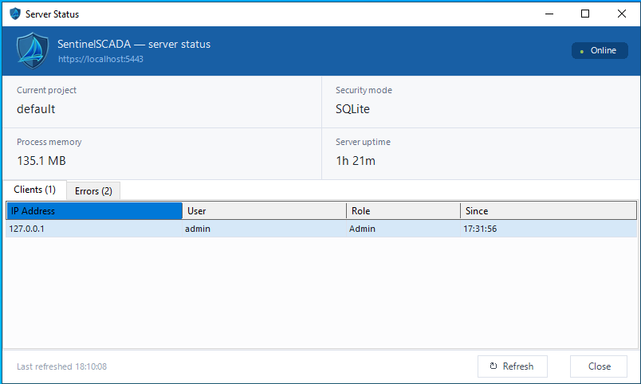
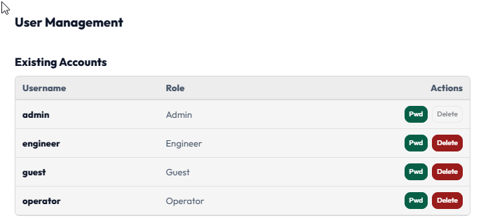
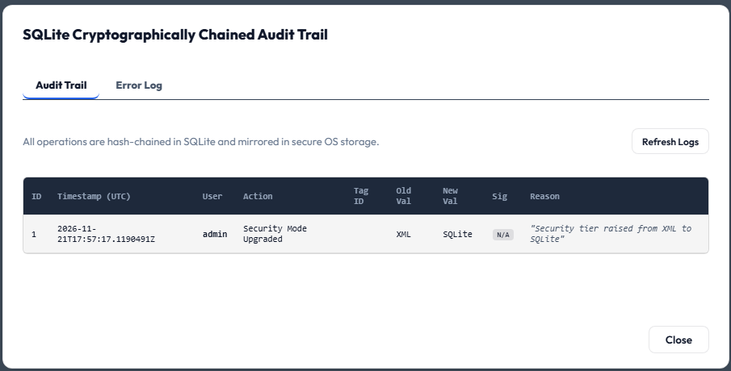
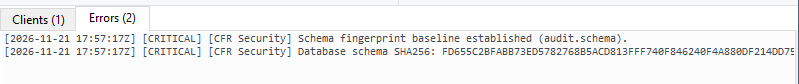

SentinelSCADA › Server Setup Guide › Part 6
SentinelSCADA has three security modes, one above the other:
You can move up this ladder whenever you like, but you can never move back down. This part takes you from XML to SQLite and then says where to find Keycloak.
You need to be signed in as admin. Choose Security > Security Settings…. The Security Level tab is the first one. It shows the three modes, with the current one marked, and an orange reminder that the level can only be raised.
Choose SQLite, then press Apply Security Level. A confirmation repeats that this is a one-way change. Choose OK to go ahead.

Apply Security Level makes the change by itself. The Save Security Settings button is for the settings on the other tabs, so you do not need it to keep the new level, and it does no harm if you press it.
When the level has been raised, the server checks your accounts and names any that still have their default password.

Do what it says. Open Security > User Management… and change each of those passwords, as you did for admin in Part 3.
Open the Security Level tab again. SQLite is now marked current, and XML is greyed out with the reason beside it.

The Launcher’s Server Status window now shows SQLite as the security mode, and the client list shows who is signed in.

Your users have been carried across, with their roles. Open Security > User Management… to see them.

Open Security > Audit Trail. It is now titled SQLite Cryptographically Chained Audit Trail. The change you have just made is its first record: who made it, when, and the old and new levels.


Keycloak is the top of the ladder, for regulated use such as 21 CFR Part 11. It adds mandatory electronic signatures (a username, password and reason) for alarm acknowledgements and recipe downloads, validated through Keycloak single sign-on. Local user accounts can no longer be created for the project, because accounts are managed externally, in Keycloak.
Setting up Keycloak is a job for your own IT team, and this guide does not cover it. It involves Docker and Keycloak configuration. The Server Guide describes the security modes and the setup in detail. Open it from the tray menu with Help (Server Guide)….
You now have a server in SQLite mode, with your accounts and roles intact, the default passwords changed and a tamper-evident audit trail.
If you are using a virtual machine, shut down the guest and take a snapshot called SQLite mode working.